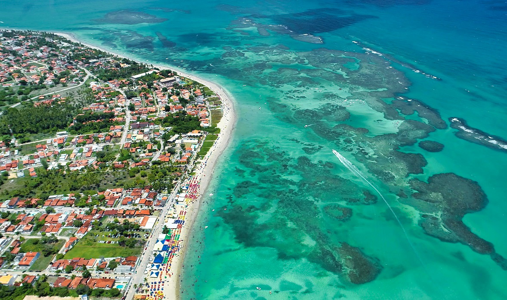
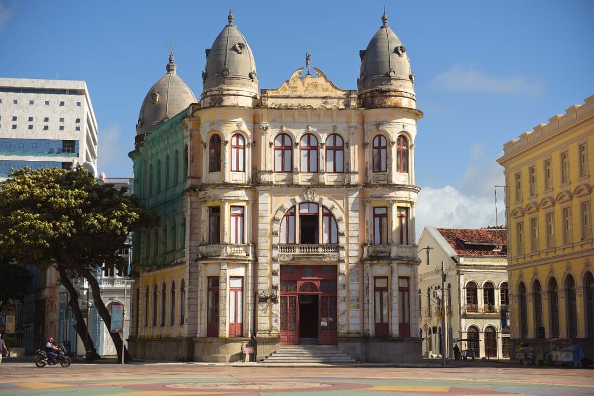

Pernambuco: Uma Jornada pela História, Cultura, Turismo e Gastronomia
Pernambuco, um dos estados mais vibrantes e culturalmente ricos do Brasil, oferece uma experiência única que transcende o tempo e os sentidos. Ao explorar a história multifacetada, a cultura enraizada, o turismo encantador e a culinária saborosa, somos levados a uma jornada que atravessa séculos e nos imerge nas profundezas da identidade desse estado do nordeste brasileiro.
A História Viva de Pernambuco
A história de Pernambuco é como um livro aberto, contendo capítulos marcados por encontros culturais e desafios revolucionários. Desde os povos indígenas que habitavam a região antes da colonização europeia até as lutas pela independência e os movimentos de resistência mais recentes, a história de Pernambuco é uma tapeçaria complexa de eventos que moldaram sua identidade única.
Os resquícios das culturas indígenas, como os tupinambás e caetés, ainda se fazem sentir na vida cotidiana e nas expressões culturais. A colonização europeia trouxe a cana-de-açúcar, que floresceu nas férteis terras pernambucanas, estabelecendo a base para a prosperidade econômica. Lutas pela liberdade, como a Revolução Pernambucana de 1817 e o movimento abolicionista, reforçaram o espírito de resistência e justiça que perdura até hoje.
Uma Profusão Cultural

A cultura de Pernambuco é uma celebração da diversidade, um tributo às raízes entrelaçadas de diferentes povos. A música, a dança e as tradições orais narram histórias que atravessaram gerações. O frevo e o maracatu, com sua energia contagiante e ritmos únicos, são expressões da alegria e da criatividade do povo pernambucano. Festas como o carnaval do Recife e Olinda, repletas de cores, ritmos e danças, refletem a paixão pela vida.
As festas juninas, honrando os santos São João, São Pedro e Santo Antônio, transformam as cidades em cenários de celebração, onde comidas típicas como a canjica e o milho cozido unem as pessoas em torno de uma mesa farta. A culinária é um verdadeiro mosaico de sabores, trazendo à mesa pratos como a feijoada pernambucana e o bolo de rolo, que representam a fusão das influências indígenas, africanas e europeias e asiáticas, os habitantes pernambucanos formam um verdadeiro mosaico étnico e cultural que enriquece o estado de maneiras inúmeras.
Herança Cultural, Étnica e Tradições Populares
A composição populacional de Pernambuco é resultado de uma herança étnica ampla e variada. Os povos indígenas originários da região antes da chegada dos colonizadores europeus deixaram sua marca cultural e influências profundas nas tradições locais. Durante o período de colonização, africanos escravizados foram trazidos à região, contribuindo de forma significativa para a formação da cultura pernambucana, especialmente nas esferas da música, dança e gastronomia.
Imigrantes europeus, como portugueses, espanhóis e holandeses, também deixaram suas pegadas culturais, enquanto a influência asiática, notavelmente das comunidades japonesas, se faz presente em algumas regiões do estado. Essa miscelânea de influências se manifesta nas festividades populares, nas expressões artísticas, nas crenças religiosas e até mesmo nas características físicas da população.
A diversidade étnica e cultural é um dos pilares fundamentais que sustentam a identidade do estado, enriquecendo suas tradições, expressões artísticas e comunidades. Ao reconhecer e valorizar essa diversidade, Pernambuco pode construir um futuro mais inclusivo e próspero para todos os seus habitantes
Raízes Culturais e Tradições Populares
As raízes culturais profundas de Pernambuco são evidentes em suas tradições populares. O estado é famoso por manifestações como o frevo e o maracatu, danças e ritmos que se originaram no carnaval e nas celebrações religiosas. O frevo é uma dança enérgica marcada pela velocidade e pelas acrobacias dos passistas, acompanhada por uma orquestra de metais. O maracatu, por outro lado, é uma manifestação afro-brasileira que combina música, dança e rituais religiosos, muitas vezes retratando histórias e lendas locais.
Um Banquete para os Sentidos
A culinária pernambucana é uma atração por si só. Nos mercados, como o Mercado de São José, aromas e sabores se misturam, oferecendo desde ervas exóticas até doces tradicionais. A feijoada pernambucana, um prato que vai além da receita, conta a história do estado em suas camadas de sabor. O bolo de rolo e o acarajé são apenas uma amostra do que essa culinária multifacetada tem a oferecer.
Literatura e Expressões
A literatura também desempenha um papel significativo na cultura. O Movimento Armorial, liderado pelo escritor Ariano Suassuna, busca resgatar elementos da cultura popular nordestina e incorporá-los à literatura e outras formas de arte. A obra "Auto da Compadecida", de Suassuna, é uma peça teatral amplamente reconhecida que incorpora elementos do folclore e das tradições populares.
Arte contemporânea
Além das tradições enraizadas, Pernambuco também possui uma cena de arte contemporânea vibrante e dinâmica. O Instituto Ricardo Brennand, por exemplo, é um complexo cultural que abriga um vasto acervo de arte europeia e brasileira, além de jardins exuberantes. O Museu de Arte Contemporânea de Pernambuco (MAC-PE) promove a arte moderna e contemporânea, destacando artistas locais e nacionais.
Turismo que Encanta
Os destinos turísticos de Pernambuco cativam os visitantes com suas variadas paisagens e rica herança cultural. Olinda, com sua arquitetura colonial e festas de carnaval, é uma janela para o passado, enquanto Recife, a "Veneza Brasileira", combina modernidade e tradição de maneira intrigante. As praias são tesouros naturais, desde Porto de Galinhas com suas piscinas naturais até a Praia dos Carneiros com sua beleza serena.
Educação em Pernambuco: Um Panorama das Escolas e Desafios Educacionais:
A educação desempenha um papel crucial no desenvolvimento de qualquer sociedade e Pernambuco não é exceção. O estado, situado no Nordeste do Brasil, tem enfrentado desafios e avanços em seu sistema educacional ao longo dos anos. Este artigo explora a situação da educação em Pernambuco, com foco nas características das escolas e nos desafios que a rede educacional enfrenta.
Pernambuco tem investido em melhorias na sua rede de educação. Nos últimos anos, o estado implementou políticas que visam aumentar a qualidade do ensino, a formação de professores e a infraestrutura das escolas. Programas como o Pacto pela Educação têm buscado fortalecer a gestão escolar e melhorar os índices educacionais.
Desafios Educacionais
Apesar dos esforços realizados, a educação em Pernambuco ainda enfrenta desafios significativos. Um dos principais desafios é o baixo desempenho nos indicadores educacionais, como o Índice de Desenvolvimento da Educação Básica (IDEB). Taxas de evasão escolar e reprovação ainda são preocupantemente altas em algumas áreas.
Outro desafio é a desigualdade educacional. As disparidades entre escolas urbanas e rurais, bem como entre regiões mais desenvolvidas e menos desenvolvidas do estado, contribuem para uma distribuição desigual de oportunidades educacionais. A falta de acesso a recursos educacionais de qualidade pode perpetuar o ciclo de desigualdade.
Um Tesouro de Riquezas Naturais e Biodiversidade:
Pernambuco é abençoado com uma variedade de biomas, cada um com sua própria flora e fauna distintas. A Mata Atlântica, por exemplo, cobre parte do litoral do estado e é um dos biomas mais ameaçados do mundo. A vegetação exuberante abriga inúmeras espécies de plantas e animais, incluindo espécies endêmicas que só são encontradas nessa região.
O Sertão, uma região semiárida, é outro bioma presente em Pernambuco. Apesar das condições climáticas desafiadoras, o Sertão possui uma adaptação impressionante de plantas e animais que sobrevivem em um ambiente árido. A Caatinga é o bioma predominante nessa região e abriga espécies resilientes, como o mandacaru e o tatu-bola.
Os rios e lagos de Pernambuco não apenas contribuem para a biodiversidade, mas também são fontes essenciais de recursos hídricos para as comunidades locais. O Rio São Francisco, um dos maiores rios do Brasil, atravessa o estado, fornecendo água para irrigação e consumo humano. A região também abriga cachoeiras deslumbrantes, como a Cachoeira do Urubu e a Cachoeira do Caracol.
Preservação e Continuidade
Enquanto Pernambuco abre suas portas ao turismo e à modernidade, esforços são feitos para preservar sua autenticidade. Iniciativas de turismo sustentável buscam equilibrar o desenvolvimento com a proteção do patrimônio natural e cultural. A valorização das tradições, como o maracatu e o frevo, continua a inspirar gerações mais jovens a manterem vivos esses legados culturais.
Pernambuco tem produzido uma série de artistas e intelectuais renomados. O escritor e dramaturgo Nelson Rodrigues, conhecido por suas obras teatrais provocativas, é um exemplo marcante. Além disso, o artista plástico Francisco Brennand deixou um legado de esculturas e cerâmicas que enriquecem a cena artística brasileira.
Conclusão
Pernambuco é uma terra de contrastes e harmonias, onde passado e presente dançam juntos. Sua história rica, cultura efervescente, destinos turísticos deslumbrantes e culinária apaixonante se entrelaçam para oferecer uma experiência inesquecível. Em cada canto deste estado, os viajantes podem testemunhar o legado de gerações passadas e a vitalidade de um povo que celebra a vida em todas as suas manifestações. Pernambuco é um convite para uma jornada completa pelos sentidos e pelo coração.
A relevância nacional de Pernambuco é inegável, com contribuições que vão desde a luta pela independência até a influência cultural e artística. O estado tem sido um protagonista na construção da identidade brasileira, influenciando a política, a cultura, a economia e a academia. A diversidade de contribuições de Pernambuco continua a enriquecer o Brasil, lembrando-nos da importância de reconhecer e celebrar as diversas regiões que compõem essa nação diversificada e vibrante.